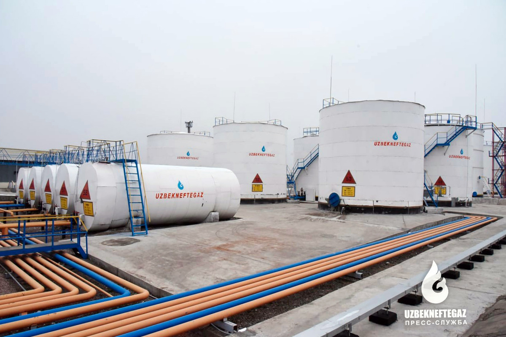
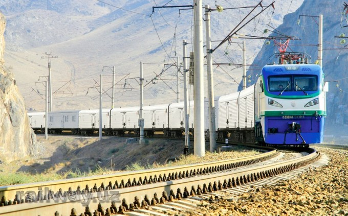
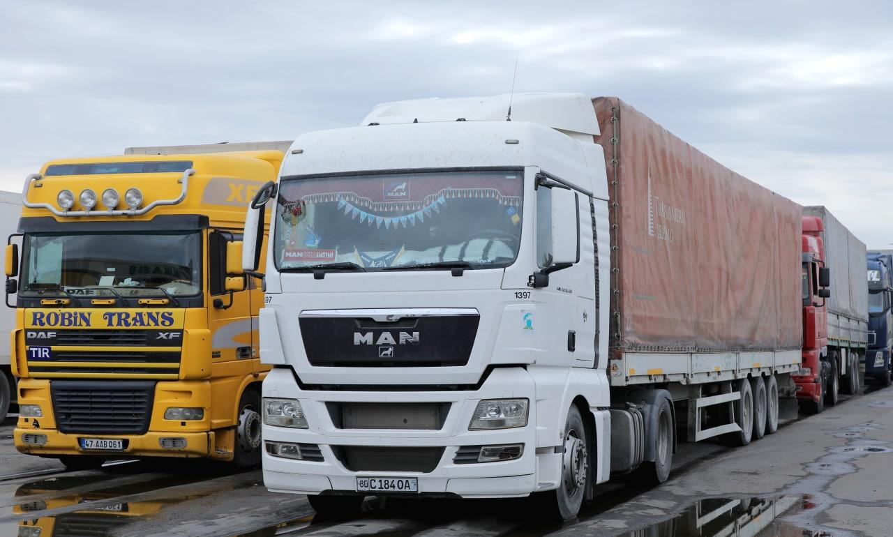

"Gaz qazib olishning pasayishi va yangi konlar"
Mavjud gaz konlarining 85 foizida bosim tushib ketgan va resurslar kamaygan. Bu sanoat korxonalarining barqaror ishlashiga xavf tug‘dirmoqda.
O‘zbekiston energetika sektori 2026-yilda o‘zining eng murakkab transformatsiya bosqichlaridan birini boshdan kechirmoqda. Energetika vazirligi ma’lumotlariga ko‘ra, mamlakatdagi mavjud gaz konlarining 85 foizida resurslar tabiiy ravishda kamayib, qazib olish bosimi keskin tushib ketgan. Bu esa sanoat korxonalarini barqaror yoqilg‘i bilan ta’minlashda jiddiy xavf tug‘dirmoqda. 2026-yil uchun gaz qazib olish prognozi 40,2 mlrd kub metr etib belgilangan bo‘lib, bu o‘tgan yilga nisbatan qariyb 1,5 mlrd kub metrga kamdir. Bunday pasayish tendensiyasi konlarning o‘ta chuqur qatlamlariga kirib borilayotgani, eskirgan kompressor stansiyalarining texnik imkoniyatlari cheklangani va mahsulot tannarxining oshib borayotgani bilan izohlanmoqda.

Ushbu iqtisodiy va texnologik qiyinchiliklarga javoban, 2026-yil "qazib olishning pasayishini to‘xtatish va barqarorlashtirish yili" deb e’lon qilingan. Hukumat asosiy e’tiborni Qoraqalpog‘istonning Ustyurt platosi va Mo‘ynoq tumanidagi yangi istiqbolli maydonlarga qaratmoqda. Xususan, Mo‘ynoqda ochilgan yangi kon va undagi respublikada eng yuqori debetga ega bo‘lgan "Mo‘ynoq-2" qudug‘i tizimga qo‘shimcha sutkalik 3 mln kub metr gaz berishni boshladi. Shuningdek, 2026-yilning dastlabki oylaridayoq ikkita yangi gaz-kondensat koni ochilgani va Ozarboyjonning SOCAR kompaniyasi bilan hamkorlikda geologiya-qidiruv ishlari jadallashtirilgani sanoatning "gaz ochligi"ni bartaraf etishga qaratilgan strategik qadamlardir.

